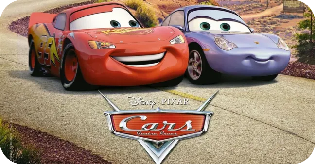

Flash McQueen, splendide voiture de course promise au succès, doit participer à la prestigieuse Piston Cup. À cause d'une déviation, Flash atterrit dans la petite ville de Radiator Springs, sur la Route 66. Il va alors rencontrer Sally, une élégante Porsche 2002, Doc Hudson, une Hudson Hornet 1951 au passé mystérieux, et Mater, une dépanneuse rouillée mais à qui on peut faire confiance.

Lors du Dinoco 400, la dernière course de la saison de la Piston Cup, trois coureurs sont à égalités de points : le septuple champion Strip Weathers, dit le King, qui tente de remporter sa huitième et dernière Piston Cup avant de prendre sa retraite, l'habituel second, Chick Hicks, qui a recours aux accidents forcés pour prendre de l'avance, et le talentueux mais arrogant nouveau venu Flash McQueen. En queue de peloton, Flash évite un carambolage impliquant tous les concurrents, délibérément provoqué par Chick. Pendant que les autres voitures s'arrêtent pour changer de pneus, McQueen reste en piste pour prendre la tête. Grâce à cette avance, il domine la fin de course, jusqu'au dernier tour où ses pneus arrière éclatent. Chick et le King le rattrapent, mais les trois franchissent la ligne d'arrivée exactement au même moment.